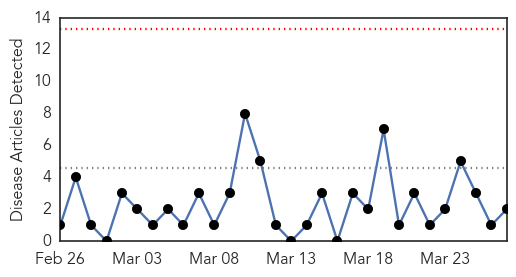
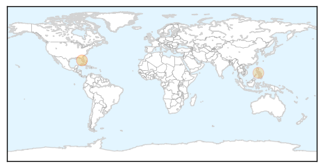
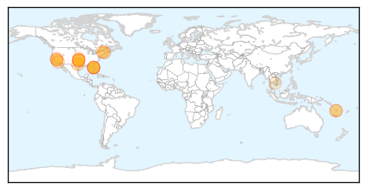

Meningitis
30-Day Web Trend
0 alerts, 0 warnings

30-Day Twitter Trend
2 alerts, 0 warnings

Article Locations
Article Confidences

Top Articles:
Top Tweets:
-
No tweets found for Mar 27, 2015
Measles
30-Day Web Trend
0 alerts, 0 warnings

30-Day Twitter Trend
1 alerts, 0 warnings

Article Locations
Article Confidences

Top Articles:
- 0.976
- Measles a rare concern for campus, officials say
- 0.973
- Inadequate vaccination rates fueled recent measles outbreak – The Pump Handle
- 0.969
- Measles case confirmed in Oklahoma
- 0.947
- Our View: Opting not to vaccinate puts others at risk
- 0.931
- Oklahoma Health Department confirms a case of measles
- 0.930
- Oklahoma reports first case of measles in 18 years
- 0.926
- Traveler infected with measles visited Sarasota County
- 0.926
- Traveler infected with measles visited Sarasota County
- 0.865
- SPC lends public health surveillance helping hand to Vanuatu
- 0.847
- Measles Patient Visited Kissimmee, Sarasota, South FL
- 0.841
- Dana Hills High School
- 0.837
- SPC lends public health surveillance helping hand to Vanuatu - Vanuatu
- 0.753
- Measles positive traveler spent time in several places in Florida
- 0.675
- OSDH confirms first case of measles in Oklahoma since 1997
- 0.630
- Public health experts see anti-vaccine bill as scare tactic
- 0.622
- Public health officer: Cost of Clallam measles outbreak could reach $200,000 -- Port Angeles Port Townsend Sequim Forks Jefferson County Clallam County Olympic Peninsula Daily NEWS
- 0.573
- Another View -- Wendy L. Wright: NH needs an immunization registry to protect our children
- 0.567
- WHO says Cambodia is measles-free
- 0.566
- Oklahoma State Department of Health confirms measles case
- 0.530
- International traveler with measles confirmed in Kissimmee
Top Tweets:
-
No tweets found for Mar 27, 2015